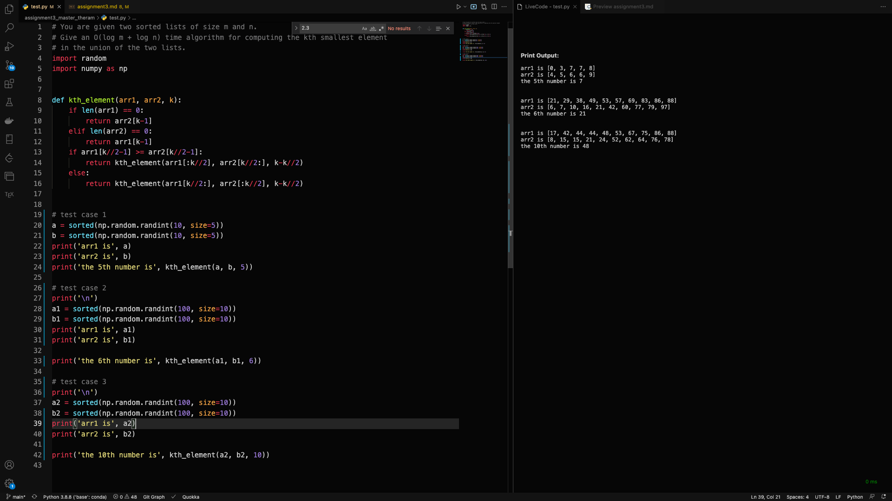

Section 2.2 describes a method for solving recurrence relations which is based on analyzing the recursion tree and deriving a formula for the work done at each level. Another (closely related) method is to expand out the recurrence a few times, until a pattern emerges. For instance, let’s start with the familiar T (n) = 2T (n/2) + O(n). Think of O(n) as being ≤ cn for some constant c, so: T (n) ≤ 2T (n/2) + cn. By repeatedly applying this rule, we can bound T (n) in terms of T (n/2), then T (n/4), then T (n/8), and so on, at each step getting closer to the value of T (·) we do know, namely T (1) = O(1).
T(n) ≤ 2T(n/2)+cn
≤ 2[2T(n/4)+cn/2]+cn = 4T(n/4)+2cn ≤ 4[2T(n/8)+cn/4]+2cn = 8T(n/8)+3cn
≤ 8[2T (n/16) + cn/8] + 3cn = 16T (n/16) + 4cn
.
A pattern is emerging... the general term is
T(n) ≤ 2kT(n/2k) + kcn. Plugging in k = log2 n, we get T (n) ≤ nT (1) + cn log2 n = O(n log n).
(a) Do the same thing for the recurrence T (n) = 3T (n/2) + O(n). What is the general kth term in this case? And what value of k should be plugged in to get the answer?
-
because T(n)=3T(2n)+O(n)
-
T(n)≤3T(n/2)+cn
≤3[3T(4n)+2cn]+cn=9T(4n)+3cn>2+cn
≤9[3T(8n)+4cn]+25cn=27T(n>8)+23cn+cn+49cn
≤27[3T(16n)+8cn]+419cn=81T>(16n)+23cn+cn+49cn+>27cn8
-
As we can see,The general Iterm is
T(n)≤3kT(2kn)+2cn((23)k−1)
-
k should be plugged is
k=log2n, Reason: n is power of b, and b is 2 in this question. the depth is k=logbn
- Because T(n)=T(n−1)+O(1)
- T(2)=T(1)+O(1)
T(3)=T(2)+O(1)=T(1)+2O(1)
T(4)=T(3)+O(1)=T(1)+3O(1)
- As we can see T(n)=T(1)+(n−1)O(1)
- because O(1) is a constant, we can let O(1) be c, >then T(n)=T(1)+c(n−1). Apparently T(n)=O(n)
Solve the following recurrence relations and give a Θ bound for each of them.
-
a. T(n)=2T(n/3)+1
- d=0, a=2, b=3
- logba=log32>d
- T(n)=O(nlog32)
-
b. T(n)=5T(n/4)+n
- d=1 a=5 b=4
- logba=log45>d
- T(n)=O(nlog45)
-
c. T(n)=7T(n/7)+n
- d=1 a=7 b=7
- logba=1=d
- T(n)=O(nlogn)
-
d.T(n)=9T(n/3)+n2
- d=2 a=9 b=3
- logba=log39=2=d
- T(n)=O(n2logn)
-
e.T(n)=8T(n/2)+n3
- d=3 a=8 b=2
- logba=log28=3=d
- T(n)=O(n3logn)
-
f.T(n)=49T(n/25)+n23logn
- d=3, a=49, b=25, f(n)=n23logn
- let's take g(n)=n23≤f(n)=n23logn
- In this case d=3/2
- log∗ba=log∗2549<d=3/2
- so if g(n)=n23,Then T(n)=O(n23)
- n23logn has larger growth rate than >n23
- So T(n)=n23logn
-
g.T(n)=T(n−1)+2
- T(2)=T(1)+2
- T(3)=T(2)+2=T(1)+4
- T(4)=T(3)+2=T(1)+6
- T(n)=T(1)+2(n−1)
- As we can see T(1) is a constant, f(n)=2(n-1) which has >a larger growth rate
- Then T(n)=O(n)
-
h.T(n)=T(n−1)+nc,wherec≥1isaconstant
- T(2)=T(1)+2c
- T(3)=T(2)+3c=T(1)+2c+3c
- T(4)=T(3)+4c=T(1)+2c+3c+4c
- T(k)=T(1)+2c+3c+4c+...+kc
- Apparently,every time when n increase by 1,there will be a (n+1)k, so kc determine the growth rate T(n)=O(nc)
You are given two sorted lists of size m and n. Give an O(log m + log n) time algorithm for computing the kth smallest element in the union of the two lists.
- First there are two sorted list arr1 and arr2, and a number k, indicating the kth smallest number. So there will be three parameter which is
arr1, arr2 ,k
- important Compare arr1[k//2] with arr2[k//2]. If arr1[k//2] is bigger than the arr2[k//2], then the elements in arr2[:k//2] must smaller than the kth_smallest . Then what I gonna do is just find out the (k-k//2)th smallest number in arr2[k//2:] and arr1[:k//2]. we recurse those two array, and the new k number.
- Base case is that when one of the length of arr is 0 print the kth number in another arr. Because in computer science the index of an array starts at 0,so we are gonna return the (k-1)th number
def kth_element(arr1, arr2, k):
if len(arr1) == 0:
return arr2[k-1]
elif len(arr2) == 0:
return arr1[k-1]
if arr1[k//2-1] >= arr2[k//2-1]:
return kth_element(arr1[:k//2], arr2[k//2:], k-k//2)
else:
return kth_element(arr1[k//2:], arr2[:k//2], k-k//2)
